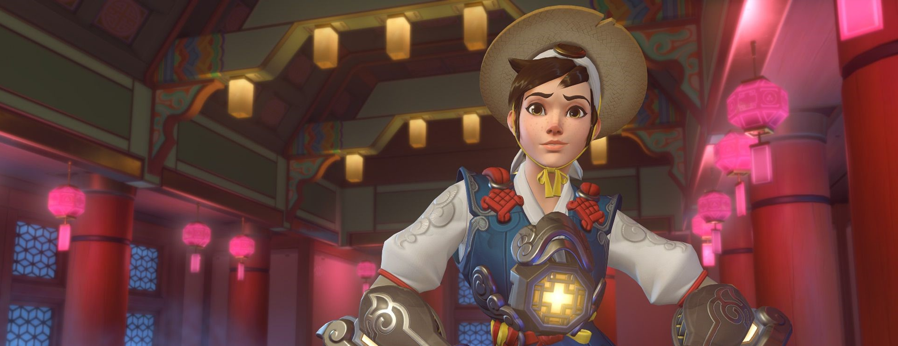
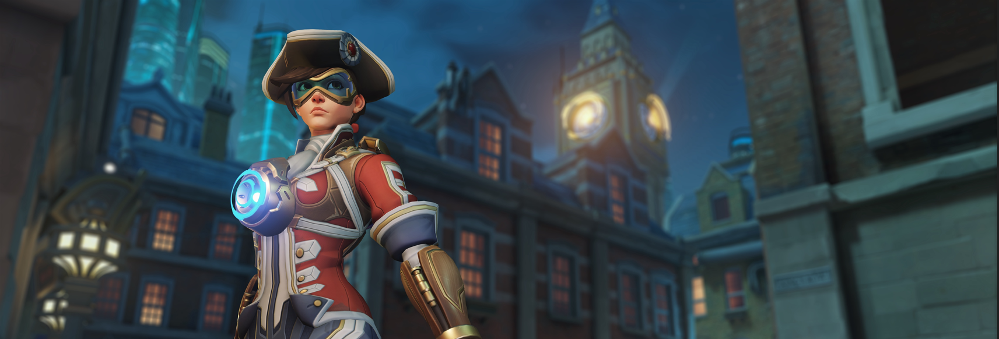
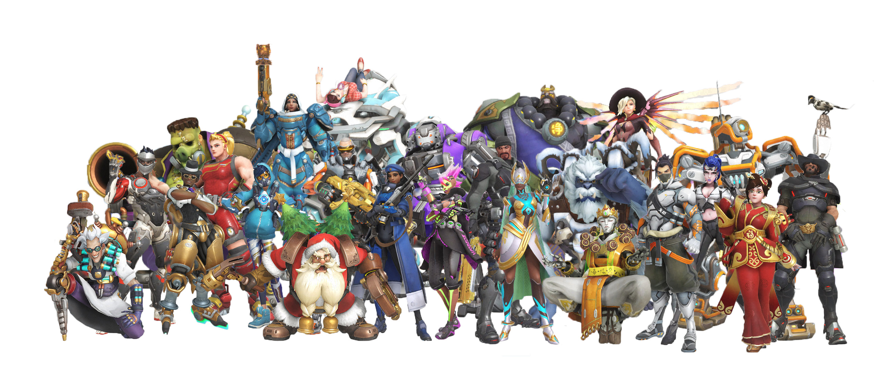

Eventi
Capodanno lunare
per essere correlato al capodanno lunare del mondo reale , l'evento di Overwatch si tiene più o meno nello stesso periodo (in genere da fine gennaio all'inizio di febbraio) e prende il nome dallo zodiaco cinese ; ad esempio, il primo evento del genere verificatosi nel 2017 è stato chiamato "Anno del Gallo ". I cosmetici in questi eventi hanno seguito i temi delle leggende asiatiche. L'evento ha introdotto la prima modalità Cattura la bandiera per Overwatch chiamata "Capture the Rooster"; Blizzard aveva considerato l'aggiunta di una modalità del genere per alcuni anni durante Overwatch 'sviluppo del s, ma ha avuto difficoltà con la meccanica a causa del set molto diverso di abilità offerte dai personaggi che potrebbero sbilanciare la modalità verso personaggi in rapido movimento. Giocata sulla mappa della Torre di Lijiang, normalmente utilizzata per le modalità di controllo, ogni squadra ha una bandiera vicino alla propria base. Per catturare la bandiera dell'altro avversario, un personaggio deve rimanere vicino alla bandiera e non subire danni per alcuni secondi. Una volta che hanno preso la bandiera, devono poi restituirla alla base della loro squadra, segnando un punto se lo fanno. Se muoiono mentre riportano indietro la bandiera, un compagno di squadra può provare a catturarla, oppure la squadra avversaria deve rimanere vicino alla bandiera, evitando di subire danni per alcuni secondi, per riportarla alla propria base. Le squadre possono segnare con la bandiera della squadra avversaria anche se la bandiera della loro squadra è stata presa. Vince l'incontro la prima squadra che ottiene tre punteggi, o la squadra con il punteggio più alto dopo cinque minuti. Dopo l'evento, Blizzard ha introdotto una modalità Cattura la bandiera più generale, giocabile su qualsiasi mappa di controllo, nelle modalità Arcade, oltre a renderla un'opzione per i giochi personalizzati con diversi parametri regolabili. Una seconda nuova modalità, Bounty Hunter Brawl, è stata aggiunta nel nuovo anno lunare 2021. Questa modalità è simile alla modalità Deathmatch, tranne per il fatto che i giocatori guadagnano più punti eliminando il giocatore corrente che è contrassegnato come bersaglio; il giocatore che sferra il colpo di grazia diventa il nuovo bersaglio, la cui posizione è visibile a tutti, ma guadagna anche piena salute e ottiene un misuratore di abilità Ultimate completo. Dopo l'evento, anche la Rissa del cacciatore di taglie è stata aggiunta come modalità al gameplay Arcade. La modalità Rissa del cacciatore di taglie è stata sviluppata da Blizzard mentre giocava con un approccio tutti contro tutti alla modalità Cattura la bandiera ed eliminava l'obiettivo della bandiera mentre continuava a seguire un giocatore bersaglio.
Archivi di Overwatch
Gli eventi dell'Overwatch Archive si tengono in genere nell'aprile dell'anno e presentano modalità cooperativa giocatore contro ambiente basata sulla trama che Blizzard ha utilizzato per esplorare la storia dei personaggi e della narrativa. Secondo Kaplan, le modalità Archivio erano qualcosa che Blizzard riteneva fosse stato richiesto dai giocatori da quando hanno iniziato a offrire gli eventi stagionali. I giocatori avevano richiesto eventi non a tema festivo, oltre a cercare maggiori dettagli sull'ambientazione e la storia del mondo di Overwatch . Inoltre, questi eventi aggiungono ulteriori oggetti cosmetici basati sulle uniformi e sul retroscena delle forze originali di Overwatch. Parallelamente all'evento è stato rilasciato un fumetto digitale legato alla narrazione della modalità. Nei normali eventi dell'Archivio, i giocatori scelgono tra quattro personaggi preselezionati, quindi combattono come indicato dalla narrazione del gioco per attaccare o difendere punti dalle forze nemiche. Se un giocatore viene abbattuto, uno qualsiasi degli altri giocatori ancora sopravvissuti potrebbe aiutarlo a rialzarsi interagendo con quel personaggio per alcuni istanti. Se tutti e quattro i giocatori vengono abbattuti, o l'esplosivo viene distrutto prima di raggiungere le porte sigillate, il round termina come una sconfitta. Una modalità separata permetteva ai giocatori di completare la stessa missione senza essere limitati nella selezione del personaggio, ma senza nessuno dei dialoghi specifici del personaggio; Blizzard ha aggiunto questo in base al feedback di Junkenstein's Revenge, per fornire un modo meno restrittivo di godersi la modalità di gioco. Per i primi tre anni dell'evento Archivi, Blizzard ha aggiunto una nuova missione, mentre nel quarto anno ha aggiunto varianti speciali di queste missioni che hanno alterato le condizioni della partita, ad esempio dove la salute di ogni eroe è dimezzata ma si occupa del doppio altrettanti danni. La modalità Archivio era considerata una versione molto migliorata di una modalità giocatore contro ambiente rispetto a Junkenstein's Revenge dell'evento di Halloween. Cecilia D'Anastasio per Kotaku ha ritenuto che la modalità fosse molto più dinamica poiché richiedeva ai giocatori di spostarsi sulla mappa piuttosto che rimanere in una posizione generale, e poiché i quattro personaggi predefiniti rappresentano una squadra equilibrata, la modalità richiede un lavoro di squadra e una strategia più attenti . D'Anastasio ha anche ritenuto che con nuove linee vocali per supportare questa modalità, ha contribuito a stabilire la tradizione del gioco per i giocatori. PC Gamer ha affermato che l'evento Rivolta ha dimostrato il potenziale per una forte campagna basata sulla trama basata sul team sviluppata all'interno della narrativa di Overwatch . Gli elementi di queste missioni dell'Archivio sono stati usati come base per sviluppare il lato cooperativo del prossimo Overwatch 2 .
Anniversario
In corrispondenza dell'uscita del gioco a maggio di ogni anno, l'evento Anniversary presenta diversi nuovi cosmetici per molti personaggi. Rende inoltre disponibili per l'acquisto con monete di gioco tutti i cosmetici speciali che normalmente sono bloccati tranne durante gli eventi speciali e che è possibile ottenere tramite loot box. Quasi tutte le modalità di gioco speciali di tutti gli eventi sono anche giocabili. La modalità Anniversario è stata utilizzata per introdurre nuove importanti funzionalità nel gioco dopo i test nella regione di prova pubblica. Il primo evento dell'anniversario ha aggiunto tre nuove mappe dell'Arena utilizzate per i giochi di eliminazione su scala ridotta e che sono rimaste in rotazione dopo la conclusione degli eventi, oltre ad aggiungere nuove modalità di gioco di eliminazione. "The Workshop", un sistema basato su script per consentire agli utenti di creare i propri giochi, lanciato insieme all'evento del 3° anniversario, con molte delle modalità di gioco utente di maggior successo introdotte nell'Arcade affinché tutti possano giocare.
